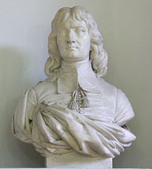

The Boisot Family

Jean Baptiste Boisot
This page traces the Boisot family genealogy. Tap any name below to open that person's genealogy page.
-
Jean-Baptiste Boisot, 1638–1694
+ Judith Hurtauld, about 1640 -
Jean-François Louis Boisot, 1695–1779
+ Susanne Vallecard -
André François Louis Boisot, 1742–1820
+ Charlotte François Marie Bessonnet, 1759–1854 -
Jean-François-Louis Boisot, 1738-1782
+ Louise Peter -
Emile-Henri Boisot, 1795–1856
+ Caroline Wist (1792-1863) -
Louis Daniel Boisot, 1795–1856
+ Albertina Bush, 1825–1889 -
Louis Boisot, 1856-1933
+ Mary Howard Spencer 1857-1948 -
Emile Kellogg Boisot, 1859–1941
+ Lillie Woodbury Reid, 1860–1939 -
Louis Marsten Boisot 1892-1941
+ Marion Maxwell Quackenbos 1892-1947 -
Marion Boisot, 1897–1990
+ Lewis Byington Ford, 1890–1985 -
Mary Jane Ford, (1921-2003)
+ Roy “Dean” Wolter, 1920-1963 -
Patricia Reid Ford, 1923–2024
+ Alexander Dawson Henderson, 1924–2020 -
Audrey Ford, (1926-living)
+ Alexander Cordrey, 1924-1975
-
Georges Louis Jonathan Boisot, 1774-1853
+ Madelaine Perregaux

Last updated on July 27, 2026